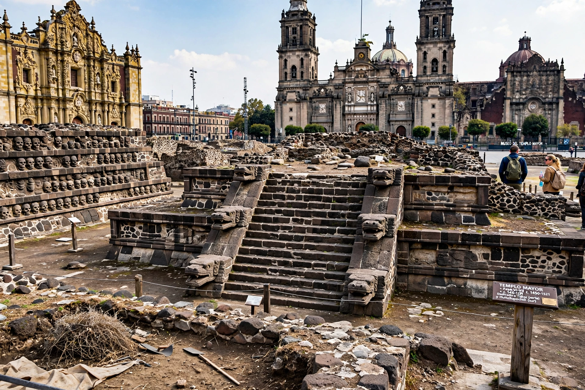

| Templo Mayor | |
|---|---|
| Location | Tenochtitlan (modern Mexico City) |
| Culture | Mexica (Aztec) |
| Built | c. 1325 – 1521, in seven construction phases |
| Height | c. 45 m (final phase) |
| Dedicated to | Huitzilopochtli and Tlaloc |
| Excavated | 1978 – 1987 (Proyecto Templo Mayor) |

The Templo Mayor (Spanish for "Main Temple") was the principal temple of Tenochtitlan, the capital of the Mexica (Aztec) empire, in what is now the historic centre of Mexico City. A great stepped pyramid standing about 45 metres high, it carried twin shrines on its summit dedicated to Huitzilopochtli, god of sun and war, and Tlaloc, god of rain — embodying the two pillars of the Aztec economy, warfare and agriculture.
The temple was rebuilt in seven major phases between the founding of Tenochtitlan around 1325 and the Spanish conquest, each new structure encasing the previous one like nested boxes. Its twin stairways faced west onto a sacred precinct of some 78 buildings enclosed by a serpent wall, the coatepantli. At its base lay the great monolith of Coyolxauhqui, placed so that sacrificial victims tumbling down the stairs re-enacted the goddess's mythic fall.
After the fall of Tenochtitlan in 1521, the temple was demolished and the Mexico City cathedral built nearby from its stones; the ruins were buried and forgotten beneath the colonial city. Scattered finds surfaced over the centuries, but the temple's location was confirmed only in February 1978, when electrical workers unearthed the eight-ton Coyolxauhqui stone. The ensuing Proyecto Templo Mayor (1978–1982 and beyond), directed by Eduardo Matos Moctezuma, demolished a city block to excavate the pyramid's successive phases and recovered thousands of offerings — the richest single source of knowledge about Aztec ritual.
The Museo del Templo Mayor, opened in 1987 beside the excavation, displays the finds, including the Coyolxauhqui monolith and, from later phases of digging, the colossal Tlaltecuhtli stone uncovered nearby in 2006. The site is part of the UNESCO World Heritage listing for the historic centre of Mexico City.